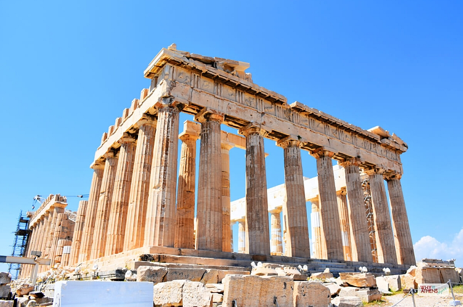

Greece is one of the places I want to travel to someday. I like to visit and explore the beauty of Santorini, Greece. It is known for its beautiful view of the sunset. A small island in Greece located in the Aegean Sea. Santorini is best known for its clifftop tourist towns that offer a spectacular view over the caldera that was created after a 16th century BC volcanic eruption. The clifftop tourist towns are Fira, Oia, Firostefani, Imerovigli, and Akrotiri. While the beach towns of Santorini are Kamari, Perissa, Perivolos, and Agios.
There are a lot of things you can do while you're in Santorini like winery tours, hiking, fishing, horse riding, sunset, sailing, and museum tours. The best time to visit Santorini depends on the kind of adventure you want to experience. The months from June to September suit best for good weather, boat tours, swimming, sunbathing, and nightlife. On the otherhand, enjoy your visit in Santorini during March - April, October, and early November with activities like sightseeing, history, hiking, and exploring if you don't enjoy beach time and hot weather.
In order to visit Santorini, you can take a plane from Athens. You can easily get direct flight to Athens from USA, UK, and Canada. Also, you can take charters frm various European cities during summer season. During your vacation in Santorini, a car can be helpful but it is not necessary since there are public bus service or you can rent a car instead of relying on the bus. You can also visit in Greece the famous Acropolis of Athens if you are fond of Greek Mythology stuff like me. Enjoy the ancient Greek monumental complex of Athens, Greece.